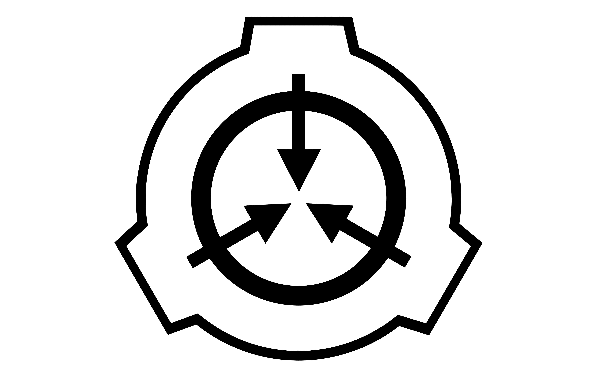
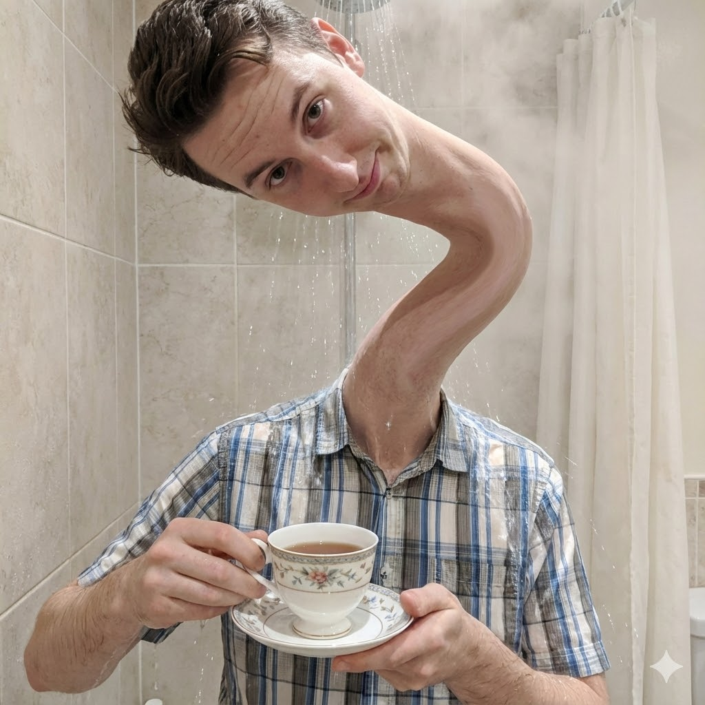
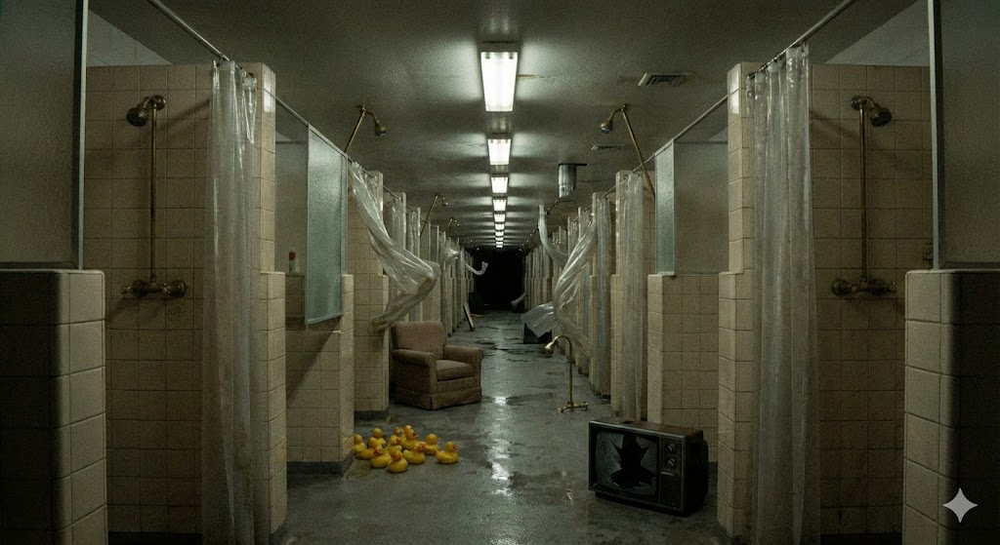
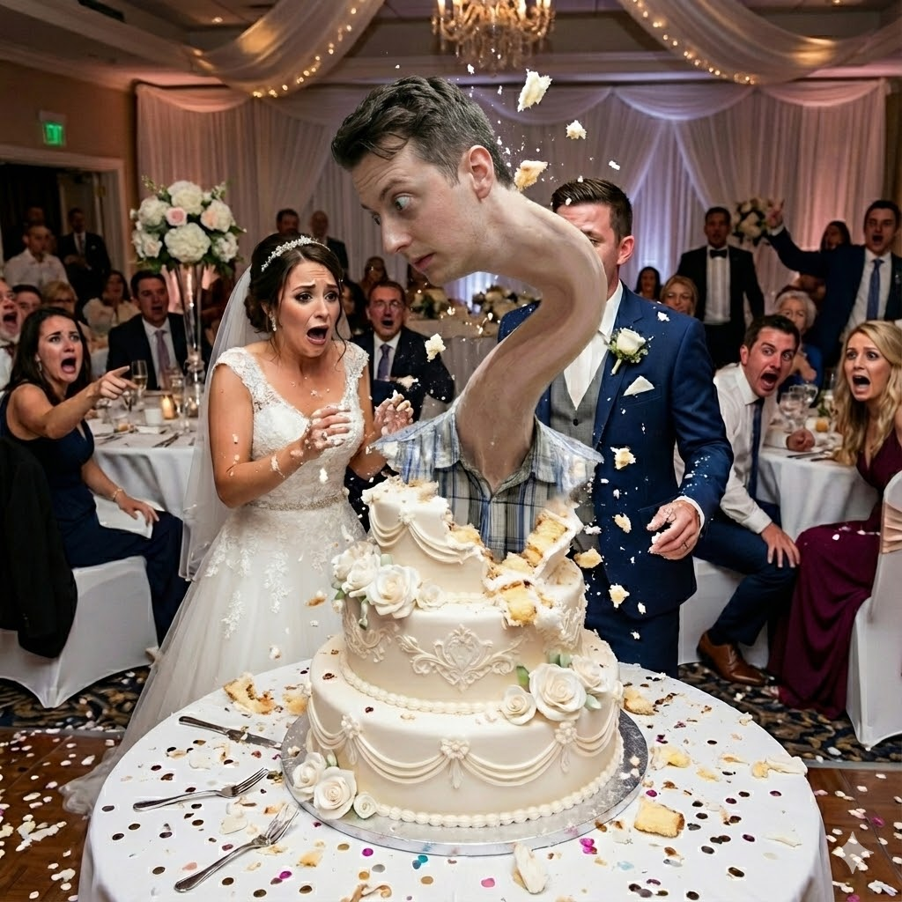
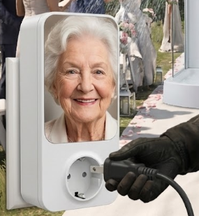
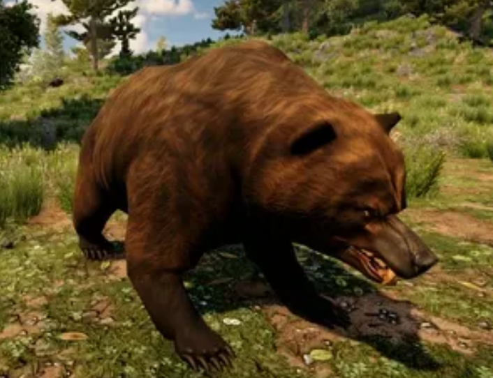
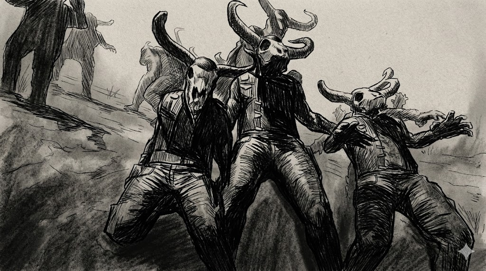
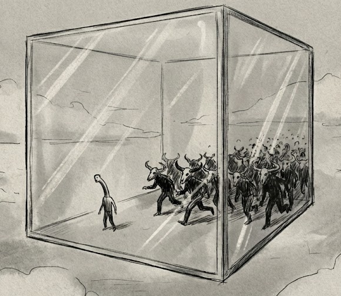

SCP Foundation
SECURE. CONTAIN. PROTECT.

Description: SCP-L3W15 is a humanoid male possessing Type-Green reality-bending capabilities linked to plumbing. He has access to a trans-dimensional subspace.
Attempts to track him usually result in the entity warping to a wedding ceremony to complain about catering. He is highly resistant to standard physical trauma.

Special Containment Procedures: Physical containment is impossible. Protocols focus on appeasement.
Pacification Kit: During breaches, MTF Theta-9 ("Party Crashers") must deploy with:
- One (1) porcelain mug.
- Boiling water (100°C).
- Yorkshire Tea (Mandatory).
Generic blends result in immediate hostility. Do not test this.

The Shower Dimension: SCP-L3W15 utilizes active shower units as gateways to a pocket reality consisting of an infinite, humid locker room.
The air is permanently saturated with the smell of "3-in-1 For Men" shower gel. Exploratory drones have confirmed the existence of hostile fauna: predatory entities comprised entirely of sentient limescale.
Travel Note: One minute in this dimension equals three hours of listening to someone explain why copper piping is superior to plastic.

Displacement Event: "The Nuptial Paradox": When tracked, SCP-L3W15 manifests at weddings. He does not know the bride or groom but insists on "checking the mains" during the vows.
He is known to interrupt the First Dance to inspect the structural integrity of the dance floor, often ripping up boards with a crowbar while muttering "cowboy builders."
Critique Log: Subject recently caused a containment breach because the DJ refused to play "Sweet Caroline" for the fourth time in a row.

SCP-L3W15-A ("The Grandma"): Subject is accompanied by an anomalous powerline adapter featuring a relief carving of an elderly woman.
Upon arrival, subject plugs this device into the nearest wall socket, causing immediate WiFi disruption which he attributes to "terrible ping."

Protocol Goldilocks (Exclusion):
SCP-L3W15 demonstrates a non-anomalous fear of Ursidae (Bears).
To exclude the entity from high-security zones, perimeter guards must be accompanied by at least one (1) live Grizzly Bear. This is currently the only known method to deny the subject entry.

SCP-L3W15-B ("The Bull"): A 7-foot humanoid entity with a muscular build, wearing biker attire. The subject's head is replaced by a skeletal bovine skull.
The entity does not vocalize beyond low-frequency mumbling. Proximity to SCP-L3W15-B causes immediate loss of consciousness in human subjects.
Subject acts as a natural predator to SCP-L3W15. It will manifest solely to chase the target.

Event Phenomenon: "The Glass Box": An extremely rare event that cannot be captured on digital video equipment. Data relies entirely on eyewitness accounts.
Subjects report looking into the night sky and witnessing a massive glass cube suspended in the air.
Inside the cube, SCP-L3W15 is observed running endlessly from an army of SCP-L3W15-B instances. The physics of this containment pocket remain unknown.

INCIDENT REPORT L3W15-D ("The DIY Disaster")
Subject: Site Director Vance
Event: Director Vance attempted to fix a leaking tap in the breakroom using a YouTube tutorial and a pair of pliers.
Result: SCP-L3W15 manifested instantly, looking visibly disgusted. He muttered, "Look at the state of that, who touched this last?"
Aftermath: In retaliation for the "amateur work," SCP-L3W15 transmuted the entire site's plumbing system. All water fountains now dispense lukewarm beef gravy (Bisto brand). The toilets, regrettably, now flush in reverse.

AUTHORIZED ACCESS ONLY